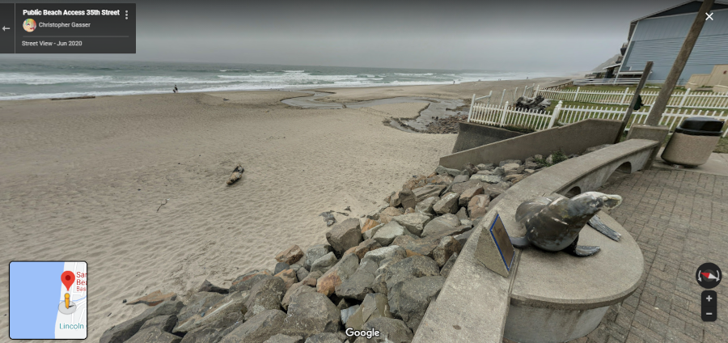
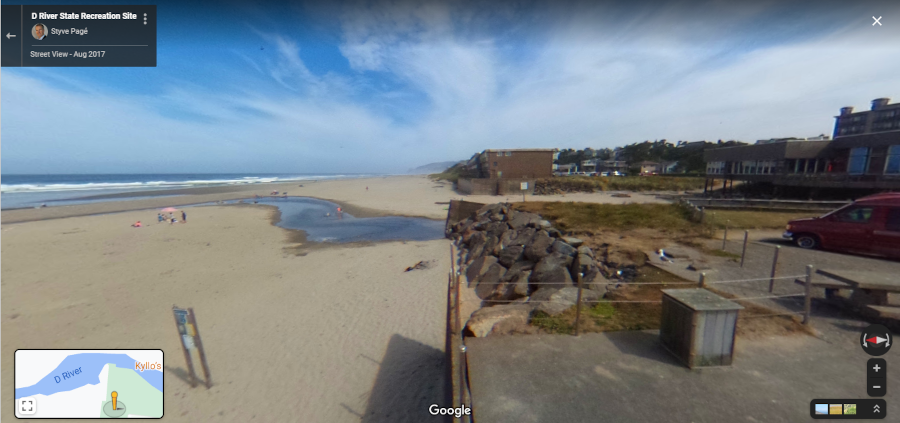
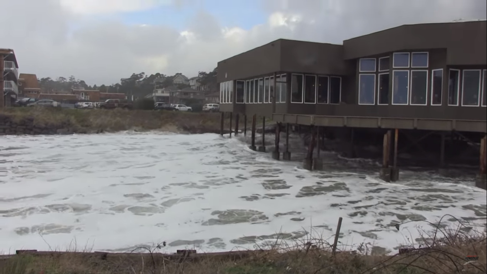
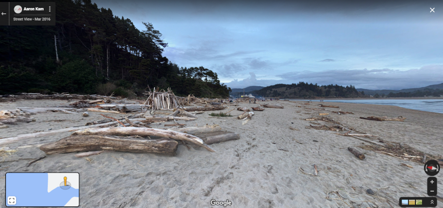

The image above is The Great Wave off Kanagawa by Katsushika Hokusai.
We're entering king tide season here on the coast. King tides "occur at a few specific times during the year when the moon’s orbit comes closest to the earth, the earth’s orbit is closest to the sun, and the sun, moon and earth are in alignment, thereby increasing their gravitational influence on the tides." What does this mean practically? Wicked cool surf.
For example, here's the Joe the Sea Lion statue in Lincoln City, OR at the 35th St Beach Access (another groovy thing about Oregon, the entire 363(ish) miles of coastline is public - no private ownership allowed) at a fairly normal tide level:

This is what the Joe Sea Lion statue looks like during a particularly nifty king tide:

Watch about 30 seconds of this vid to see what happens to Joe the Sea Lion during king tide:
Another example? D River in Lincoln city, OR. D River, claimed to be the world's shortest river (a surprisingly contentious title leading to shade thrown like "ocean water backup" and "drainage ditch surveyed for a school project") during a normal tide (notice the couple hundred feet of beach leading up to the pillars of the building on the right):

This is D River during a king tide:

Watch about 30 seconds of this vid to see what happens at D River during king tide:
Link to video about king tides.
If you go ahead and watch the entire video you'll notice a couple of things. People really like king tides and put themselves in danger watching and/or playing in them. Bad move. The ocean will drag you into its fifty degree (Fahrenheit, natch) embrace without warning while you're wearing all your winter/rain gear, between the shock of the cold and the weight of your clothes you're in serious trouble.
The other thing to notice? Logs. There are a lot of logs thrown up by the ocean on the Oregon Coast:

This leads to wicked fun bonfires and people being crushed under waterlogged logs weighing from hundreds of pounds to a couple of tons. According to that article, it takes only four inches of water to float a five ton log. If that five ton log gets picked up by the ocean and dropped onto you, you are going to have a bad day.